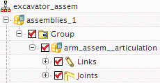

将导入的对象移动到主机构中
 运动导航器
运动导航器
arm_assem 子装配中导入的运动对象位于组节点下方：

展开连杆和运动副节点，以查看导入的14个连杆与20个运动副。
这些对象被放置在这个组中，便于您将它们与主机构中的运动对象区分开，您现在将把这些导入的对象移动到主机构中。
-
 arm_assem_articulation
arm_assem_articulation -
 移动到主组
移动到主组注意到连杆和运动副节点现在直接显示在 assemblies_1节点下方，而组节点不再存在(以灰色复选框表示)。
 文件→关闭→所有部件
文件→关闭→所有部件